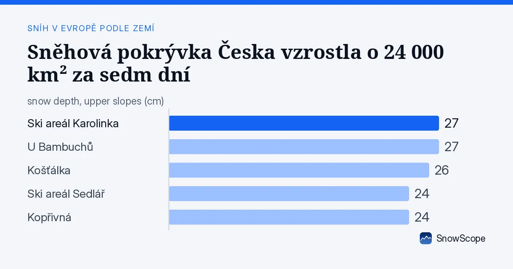

Sněhová pokrývka Česka vzrostla o 24 000 km² za sedm dní
Sněhová pokrývka Česka explodovala z pouhých 420 čtverečních kilometrů před týdnem na 24 460 km² dnes. Nárůst se odehrál téměř přes noc, přičemž většina nové pokrývky přišla poslední dva dny, když vlhký vzduch zmetal horská území.
Podívejte se na předpověď sněhu pro Ski areál Karolinka v aplikaci SnowScopeVýška sněhu, upozornění a 3D mapa, zdarma.
Od holé půdy ke 86% bílého krajiny za jeden týden
Před týdnem byl sníh vzácný. Hory ukazovaly především skálu a trávu, s pouze 420 km² pokrytými bílým sněhem na českých lyžařských terénech. Včera se toto číslo vyšplhalo na 23 970 km². Pak v posledních 24 hodinách dalších 490 km² zůstalo bílé. Dnes leží 86% mapovaného českého lyžařského území — 24 460 z 28 470 km² — pod sněhem.
Tento druh zvratu je to, co přeměňuje marginální sezónu na sezónu, která stojí za pozornost. Sněhová hranice nyní leží na 500 metrech nadmořské výšky, což znamená, že i skromné kopce mají sněhovou vrstvu. Transformace byla tak rychlá, že se to zdá méně jako postupný nárůst a více jako sepnutí vypínače.
| Day | White area | Most new snow in 3 days | Deepest resort |
|---|---|---|---|
| sobota, 21. listopadu | 620 km² | 3 cm | Ramzová |
| neděle, 22. listopadu | 490 km² | 3 cm | Figura Praděd |
| pondělí, 23. listopadu | 3 120 km² | 5 cm | Dolní Morava sport & relax resor |
| úterý, 24. listopadu | 5 090 km² | 6 cm | Košťálka |
| středa, 25. listopadu | 4 140 km² | 5 cm | Košťálka |
| čtvrtek, 26. listopadu | 23 990 km² | 11 cm | Ski areál Karolinka |
| pátek, 27. listopadu | 24 460 km² | 12 cm | Ski areál Karolinka |

Kde padlo nejvíce sněhu
Hory Jeseníky vedly závodtá s akumulací 13 cm čerstvého sněhu za poslední tři dny. Beskydy a Šumava následovaly těsně s 12 cm každá — dost na to, aby zachránily sezónu, která vypadala před několika dny beznadějně.
V terénu má Ski areál Karolinka a U Bambuchů nyní 27 cm, nejhlubší sněhové základy v celé síti českých areálů. Ski areál Sedlář, umístěný výše na 866 metrech, má 24 cm poté, co za tři dny nabral 11 cm. Tyto výšky jsou důležité: mezi 1 000 a 1 500 metry mapa ukazuje průměrnou hloubku 6 cm se sněhovou pokrývkou 99%, zatímco nižší terén mezi 500 a 1 000 metry dosahuje průměru 5 cm s pokrývkou 85%.

Tři metry udělaly rozdíl
Košťálka leží na 764 metrech a nyní má 26 cm — přesně dvojnásobek svého obvyklého listopadu hloubky 13 cm na tento den. Měřeno na stanici, nabyla 17 cm nad svůj dlouhodobý průměr a dosáhla hloubek, které konkurují vrcholným zimním měsícům v kalendáři. Tento areál také vzrostl z 9 cm před týdnem na 26 cm dnes, nárůst, který zdůrazňuje, jak moc poslední dny resetovaly sezónu.
Pravidlo nadmořské výšky zůstalo stabilní: vyšší svahy zachytily více. Horské terény v mapovaném území ukazují o něco hlubší základy než údolí, ačkoli rozdíl je skromný vzhledem k tomu, jak nedávno sníh padl.
Co přinese blízká budoucnost
Příští tři dny přinesou do Česka žádný čerstvý sníh. Systémy, které dodaly těchto 12 cm, se přesunuly na východ, zanechávajíce usazený a studený vzduch. Předpověděné úhrny v příštím týdnu zůstávají skromné — jen 2 cm se očekává kdekoli v zemi do začátku prosince.
První významná šance na nový sníh přichází 3. prosince, s 2 cm možností 4. prosince. Toto načasování se shoduje s širším evropským vzorem: sousední Polsko vidělo na nejvyšších vrcholcích 35 cm a očekává dalších 2 cm v příštím týdnu, zatímco Vysoké Tatry na Slovensku drží 32 cm s předpovědzením 1 cm. Česko leží na okraji systému, takže každá bouře nabízí úzké okno.
Co to znamená nyní
Na příští 72 hodin jsou základy, které vidíte dnes, základy, které si pojedete. Žádné zhutnění z nového sněhu je dále neprohloubí. 27 cm v Karolince a U Bambuchů představuje použitelný základ — marginální v tvrdých podmínkách, ale dostatečný, pokud se základna ztuhne pod mrazem. 24 cm v Sedláři a Kopřivné (která nabyla 10 cm za tři dny) nabízí podobnou logiku: použitelný, ne štědrý.
Příběh není o hojnosti, ale o dramatickém zotavení. Sezóna, která vypadala skončená 21. listopadu — když existovalo jen 620 km² sněhu — byla zachráněna týdenním systémem. Otázka nyní je, zda tiché období dopředu umožní tomu sněhu hutnatit, nebo zda tenké základy skončí zpět na skále a trávě, než příště přijde systém.
Pohled do budoucnosti
Perspektiva se točí kolem začátku prosince. Jestliže sníh přijde tak, jak se předpovídá mezi 3. a 4. prosincem, těch 2 cm se přidá k tomu, co již leží na zemi. Pokud se ty bouře posunout na jih nebo oslabí, Česko si ponechá své stávající základy a bude čekat déle na smysluplný nový sníh. V každém případě poslední týden prokázal, že sezóna není urovnaná. Co se zdálo nemožné před týdnem — 85% sněhová pokrývka v celé zemi — je nyní skutečností.
Tipy pro lyžaře
- Zkontrolujte, které areály u vás nyní mají 24–27 cm. Tyto základy lze lyžovat, ale jsou tenké; zůstaňte na sjezdovkách a vyhýbejte se kamenitým svahům, dokud se sníh nezhutnĚ nebo nepřijde nový sníh.
- Nad 1 000 metry je sněhová pokrývka téměř úplná. Nižší nadmořské výšky pod 500 metrů mohou stále ukazovat záplaty holé půdy; pečlivě plánujte trasy, pokud si jezdíte v údolích.
- Příští významné sněhové okno se otevře 3. prosince. Dokud se tak nestane, hloubka sněhu se nezmění, takže stávající základy jsou to, co máte. Očekávejte tvrdý sníh, jak se bude zdokonaluvatĚ pod studený noci.
- Než jdete mimo sjezdovky, zkontrolujte nejnovější oficiální lavinový bulletin pro vaši oblast. Čerstvý sníh na tenkých základech může být v strmém terénu nestabilní.
- Sledujte předpověď na 3.–4. prosinec. I 2 cm zlepší marginální základy znatelně. Pokud se ty bouře posunout na jih, další skutečná šance nemusí přijít až později v první týden prosince.
About these numbers
Resort snow depths are the deepest snow on the resort's upper slopes on the date shown; they are estimates for an area, not a measurement at one point. Forecasts can change. Always read the official avalanche bulletin before going off-piste.
Cite this report
For research, teaching or the press: the numbers and charts are free to reuse under CC BY 4.0 with this citation.
SnowScope (2026), Sněhová pokrývka Česka vzrostla o 24 000 km² za sedm dní, https://snowscope.app/blog/cs/2026/11/czechia-snow-cover-gain-this-week-27-november-2026.html, accessed 2026-11-27
SnowScope (Atlas Labs). (2026, November 27). Sněhová pokrývka Česka vzrostla o 24 000 km² za sedm dní. SnowScope snow reports. https://snowscope.app/blog/cs/2026/11/czechia-snow-cover-gain-this-week-27-november-2026.html
BibTeX
@misc{snowscope2026czechiasnowcovergainthis,
author = {{SnowScope (Atlas Labs)}},
title = {Sněhová pokrývka Česka vzrostla o 24 000 km² za sedm dní},
year = {2026},
month = nov,
howpublished = {\url{https://snowscope.app/blog/cs/2026/11/czechia-snow-cover-gain-this-week-27-november-2026.html}},
note = {Published 2026-11-27 11:29 UTC; accessed 2026-11-27}
}· CC BY 4.0 · Methods, data and tools →
Ski areál Karolinka: snow and temperature by height, this winter vs last (tools) →
Follow Ski areál Karolinka
Zdarma: zpráva, když přichází nový sníh, a předpověď každé ráno.